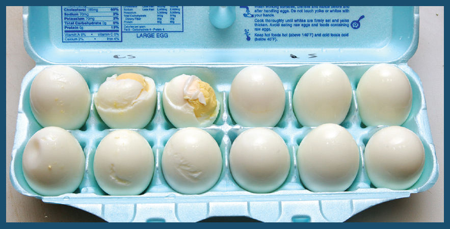
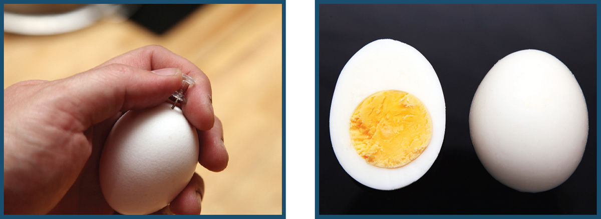

MY BOILED EGG OBSESSION
Boiled eggs that slip cleanly and reliably out of their shells have been something of an obsession of mine for well over two decades. It began when it was my job to boil and peel dozens of soft-cooked eggs to top the blanched asparagus we served at No. 9 Park in Boston, one of my first restaurant jobs. Testing what factors affect egg peelability was the subject of my very first “Food Lab” article on Serious Eats in 2009, as well as my first cooking column for the New York Times in 2019. Over the course of my life I have boiled, pressure-cooked, baked, steamed, and simmered tens of thousands of eggs and have had over a hundred different volunteers peel those eggs double-blind (that is, neither I nor the testers knew how the eggs being peeled were cooked until after the experiment was over, in order to eliminate any possible bias) to determine what truly matters and what doesn’t. You may say that my obsession borders on the eggstreme. I’d simply say that I’ve got egg peeling down to an eggsact science.
In all that testing, I’ve managed to boil it down to one all-important factor: the temperature at which you start cooking the eggs. Everything else is details.

The six eggs on the left were started in cold water, while the six on the right were lowered into boiling water.
Starting eggs in cold water coagulates egg-white proteins, which causes them to bond tightly to the inner membrane of the shell. Starting them in already-boiling water or a preheated steamer gets those proteins to set up quickly, before they have a chance to bond to the shells. The difference is night and day: when peeled, cold-water eggs are nine times more likely to experience major flaws (completely torn egg whites) and twice as likely to produce minor flaws (small divots and imperfections in the whites).
Aside from that factor, little else makes a difference. Old eggs peel just as well as fresh eggs (I compared eggs that were laid the same morning with eggs that were between two weeks and one month old). Vinegar, baking soda, or salt added to the water made no discernible difference. Room-temperature eggs will cook about a minute faster than cold eggs but are no easier or more difficult to peel. Pressure-cooked eggs are easy to peel, but they are also noticeably tougher than steamed or boiled eggs. Baked eggs stick impossibly to the shell, take forever, and have a strong, sulfurous aroma (I’m convinced baked eggs are some kind of bad yolk).
Happily, I’ve found that it makes no difference to peelability whether your eggs are fully submerged in boiling water or simply resting in a covered pot with an inch or so of rapidly boiling water. In fact, eggs that are cooked in the latter manner come out a bit more tender than those that are boiled the entire way through (because boiling water is a more effective and violent means of heat transfer than steam).
The wok is also an ideal egg-steaming vessel. A saucepan, with its tall sides, makes it difficult to gingerly lower eggs to the bottom without accidentally cracking them. The gently sloped sides of a wok make it easy.
There’s only one other factor that made a noticeable difference in the appearance of the finished eggs: pricking the fat end with a pin.
The fat end of an egg has a small pocket of air that grows larger as an egg gets older (egg shells are porous, and as water from inside the egg evaporates, air comes in to take its place). When it’s large enough, it can cause a dimple to appear in the cooked egg and may also lead to a blowout as that air expands during cooking. Pricking the fat end with a pushpin before steaming them will allow gases trapped in the fat end to escape as they expand, leading to lower chances of a cracked egg and eliminating that dimpled end.
